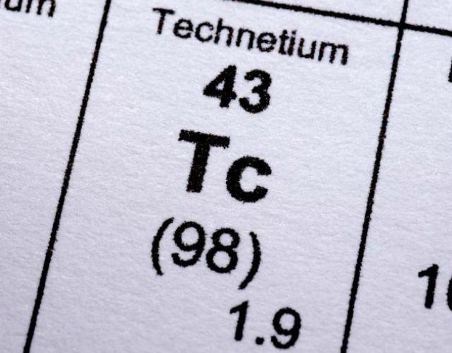
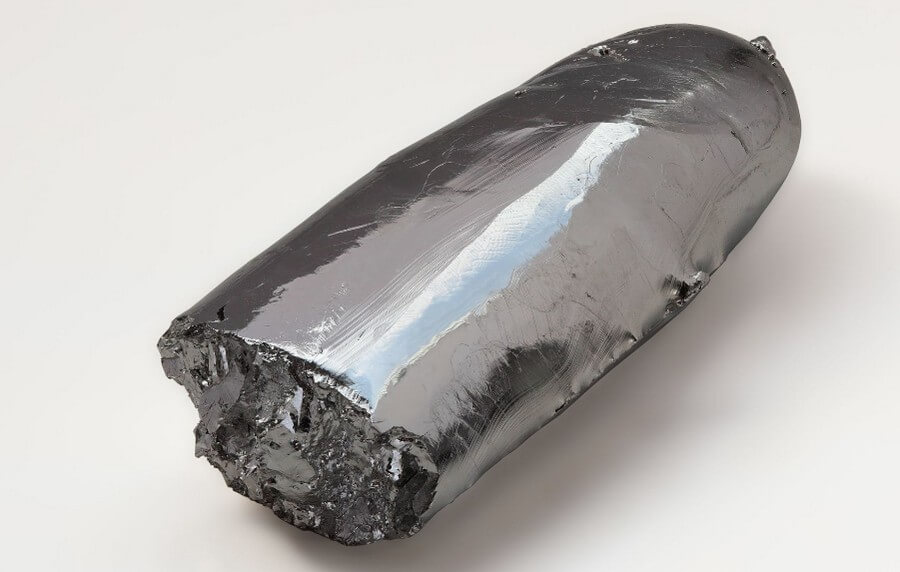

Технеций
Техне́ций (химический символ — Tc, от лат. Technetium) — химический элемент 7-й группы (по устаревшей классификации — побочной подгруппы седьмой группы, VIIB), пятого периода периодической системы химических элементов Д. И. Менделеева, с атомным номером 43.

С 1860-х по 1871 год ранние формы периодической таблицы, предложенные Дмитрием Менделеевым, содержали разрыв между молибденом (элемент 42) и рутением (элемент 44). В 1871 году Менделеев предсказал, что этот недостающий элемент займёт пустующее место под марганцем и будет иметь аналогичные химические свойства. Менделеев дал ему предварительное название «экамарганец», потому что предсказанный элемент был на одно место ниже известного элемента марганец. Многие ранние исследователи до и после публикации периодической таблицы стремились первыми открыть и назвать недостающий элемент.

Образуется при ядерном делении 235U и 239Pu. Применение в ядерной медицине как трассёр находит метастабильный изомер 99mTc (T1/2 6,0067 ч, γ-излучатель), получаемый облучением 99Мо.Широко используется в ядерной медицине для исследований мозга, сердца, щитовидной железы, лёгких, печени, жёлчного пузыря, почек, костей скелета, крови, а также для диагностики опухолей в компьютерной томографии. Пертехнетаты (соли технециевой кислоты HTcO4) обладают антикоррозионными свойствами, так как ион TcO4−, в отличие от ионов MnO4− и ReO4−, является самым эффективным ингибитором коррозии для железа и стали. Технеций может быть использован как ресурс для получения рутения, если после выделения из ОЯТ его подвергнуть ядерной трансмутации.